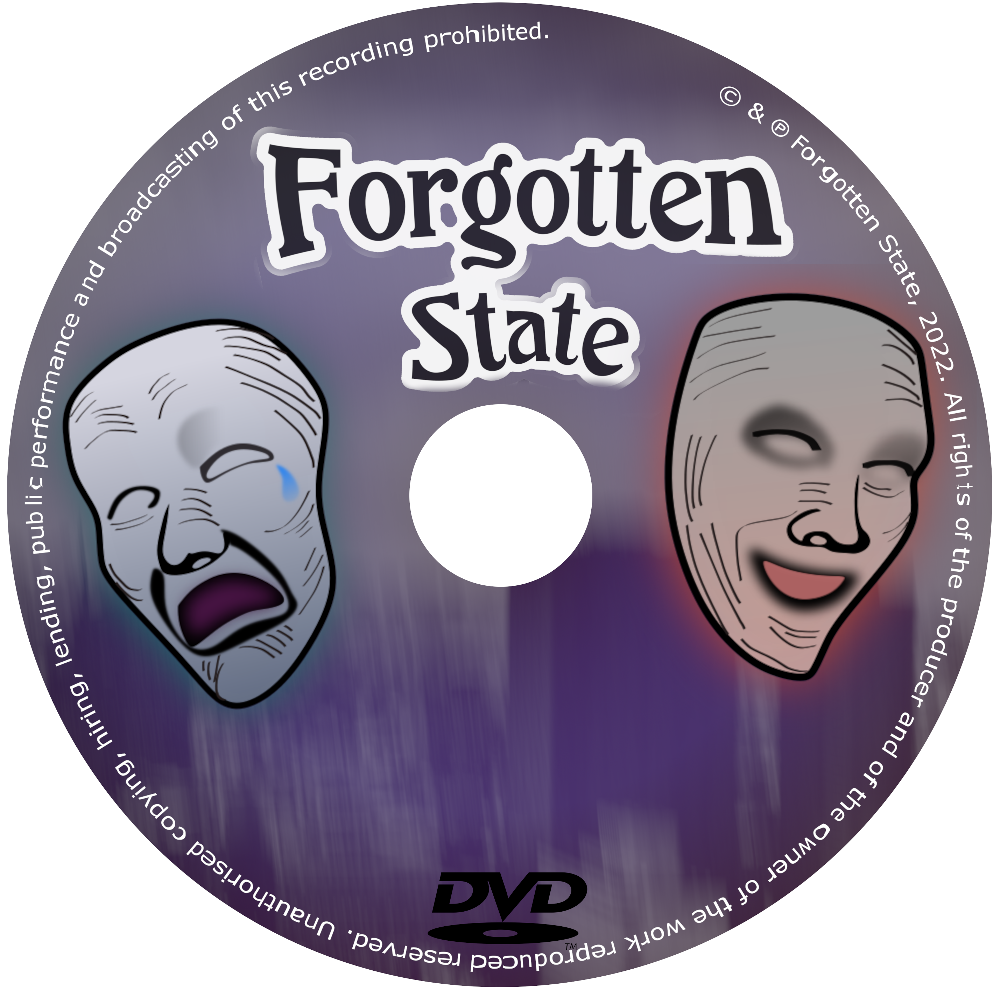

Forgotten State to gra przygodowo-survivalowa
Rozgrywka rozpoczyna się w mieszkaniu bohatera, z pozoru błahe,ale trzeba tutaj zaznaczyć że nasz bohater John choruje na schizofrenie.
Z tego powodu największym wrogiem Johna jest on sam.
Sama gra opowiada o jego życiu i zwraca uwagę ludzi na problem chorób psychicznych.
John główny bohater, 30-latek po studiach, o czarnych średniej-długości włosach, jest dosyć wysoki i mieszka samotnie w swoim mieszkaniu w centrum miasta Bosen.
Celem gracza jest utrzymanie Johna przy życiu, jak i nie wpakowanie się w kłopoty z prawem.
Podstawowymi wskaźnikami funkcji życiowych o które musi zadbać gracz, to zdrowie psychiczne, głód i pragnienie.
Poziomy ostatecznie mają być generowane losowo.
Gra będzie posiadała wiele zakończeń i będzie starała się nagradzać kolejne podejścia, ale w nietypowy sposób.
Gracz uzyskane informacje we wcześniejszych podejściach będzie mógł wykorzystać na własną korzyść podczas nowej rozgrywki.
Gra będzie dostępna do zakupu w formie fizycznej

Sterowanie będzie możliwe za pomocą standardowej klawiatury i myszy, oraz kontrolerów typu xbox one, dualshock.
Grafika będzie zmieniała swoją kolorystykę w zależności od wskaźników funkcji życiowych.
Perspektywa pierwszo-osobowa, modele i otoczenie wygenerowane w większości przy użyciu zdjęć rzeczywistych obiektów